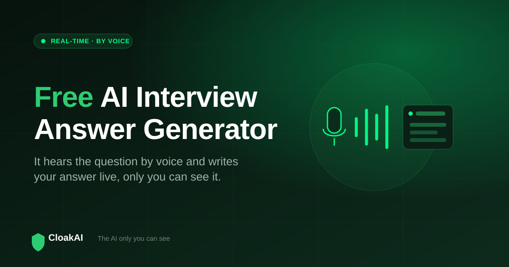
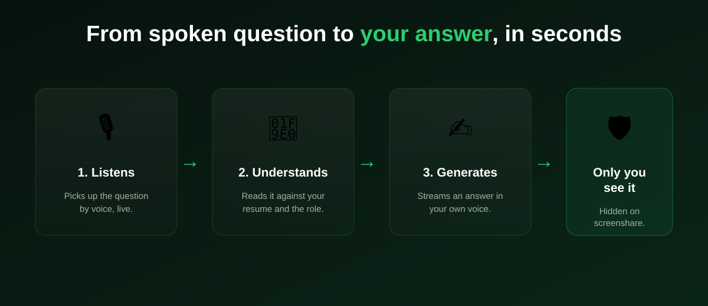

An AI interview answer generator does exactly what it sounds like: you give it an interview question, and it gives you back an answer. But there is a huge gap between a generator you paste questions into after the fact and one that works in real time, by voice, during the actual call. This guide explains how real-time answer generators work, which ones are genuinely free, whether the voice and extension versions are safe to use live, and how to test a free AI interview answer generator in a few minutes.
The most useful kind is a real-time, voice-driven generator that listens to the question as it is asked and streams an answer only you can see. CloakAI does this with a genuinely free 20-minute trial, so you can watch it turn a spoken question into a resume-grounded answer live before paying anything.
Three Kinds of AI Interview Answer Generator
Not all generators are built for the same moment. There are three categories, and picking the wrong one is the most common mistake:
- Offline / prep generators: You type or paste a question and get an answer to study later. Great for building a bank of STAR stories, useless during a live call.
- Extension generators: A browser add-on that suggests answers inside a meeting tab. Convenient, but visible on screenshare and limited to browser-based calls.
- Real-time voice generators: A native app that listens to the interviewer by voice, detects the question, and produces an answer instantly, hidden from screen capture. This is the only kind that helps you in the interview.

How a Real-Time AI Answer Generator Works
Behind the scenes, a real-time generator runs a simple but fast pipeline. It captures the interviewer's audio, converts speech to text, decides whether a question was actually asked, and then prompts a language model that has already been primed with your resume and the job description. The answer streams back word by word so you can start reading it almost immediately. The whole loop, from the interviewer finishing their sentence to the first words of your answer appearing, takes a second or two on a good tool.
The quality of the output depends on two things: the strength of the underlying model, and how well the tool grounds the answer in your background. A generator that only sees the question gives you a textbook reply. One that also knows your projects, your stack, and your numbers gives you an answer you can actually defend on the follow-up.
Does It Work by Voice, or Do You Have to Type?
This is the difference that matters most in practice. If you have to type or paste the question, you cannot keep eye contact and you fall behind the conversation. A proper voice generator removes that entirely: it listens through your system audio, so the moment the interviewer finishes asking, the answer is already forming. CloakAI works this way by default, and also offers a push-to-answer hotkey for when you want manual control, for example to only answer specific questions.
New here? Try every feature free for 20 minutes, no signup and no card needed.
Try CloakAI for free 20-minute free trial · No credit card required · Windows 10 & 11The Catch With "AI Answer Generator" Browser Extensions
Search results are full of AI interview answer generator extension options, and they look appealing because installing an extension is easy. The problem is fundamental, not fixable: a browser extension lives inside the browser window, and the browser window is exactly what gets captured when you share your screen or the call is recorded. If the interviewer asks you to share your screen, an extension-based generator is right there for them to see. A native desktop app avoids this because it uses operating-system content protection that removes the window from screen capture altogether.
The clever part of an answer generator is not writing the answer. It is delivering it fast, by voice, and invisibly. Judge every tool on those three, not on how nice the answer looks in a demo.
Which AI Interview Answer Generators Are Actually Free?
| Type | Real-time? | Voice input? | Free to test live? | Best for |
|---|---|---|---|---|
| CloakAI (native app) | ✓ | ✓ | ✓ 20 min full | Live interviews |
| ChatGPT / Claude | ⚠ Manual | ⚠ App-dependent | ⚠ Not live-ready | Preparation |
| Answer-generator extensions | ✓ | ⚠ | ⚠ Small free tier | Browser calls, risky |
| Prep / mock generators | ✗ | ✗ | ✓ | Building answer banks |
Not ready to buy? Test every one of those features free for 20 minutes first.
Try CloakAI for free 20-minute free trial · No credit card required · Windows 10 & 11Beyond Spoken Questions: Coding and On-Screen Problems
Interviews are not only spoken questions. Technical rounds often put a coding problem, an MCQ, or a data table on your screen. A complete answer generator handles these too. CloakAI includes a Screen Scan that reads whatever is on your screen and returns the approach, the code, and the time complexity, so a live coding round is covered by the same tool that answers your behavioural questions. That combination, voice answers plus on-screen problem solving, is what turns a simple generator into a full interview co-pilot.
How to Test an Answer Generator Before Your Interview
- Load your resume. A generator without your background produces generic answers you cannot defend.
- Speak a real question. Say "walk me through a project you are proud of" out loud and watch how fast and how personalised the answer is.
- Share your screen on a mock call. Confirm the generator does not appear in the shared view. If it does, it is not safe for live use.
- Try a coding problem. Put a LeetCode-style question on screen and test the scan or code path.
Final Word
A free AI interview answer generator is only worth using if it works when it counts: in real time, by voice, and out of sight. Use ChatGPT or Claude to build your answers in advance, then use a real-time generator you have already tested to back you up live. CloakAI is the strongest option for that live moment because it is genuinely free to try in full, listens by voice, personalises to your resume, and stays invisible on every major call platform. Test it once in a mock interview and you will know immediately whether it belongs in your real one.
Line it up for your next interview and try the whole thing free for 20 minutes.
Try CloakAI for free 20-minute free trial · No credit card required · Windows 10 & 11